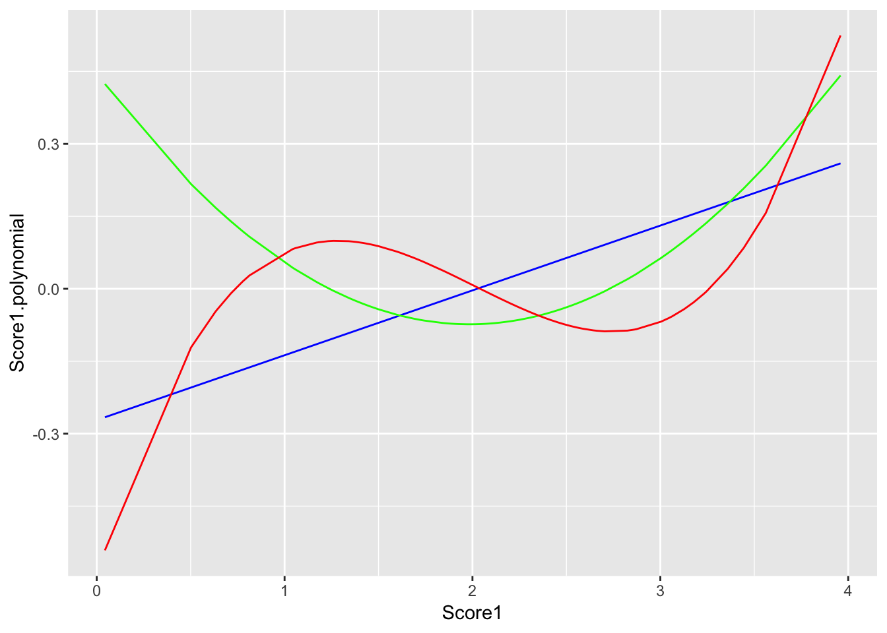

Chapter 8 Common Data Transformations
I have created R packages that contain functions to more easily prepare your data for statistical analysis.
In the next two chapter you will learn about the functions from some packages I have created:
datawrangling https://dr-jt.github.io/datawrangling
datascoring https://dr-jt.github.io/datascoring
englelab https://github.com/EngleLab/englelab
I am hosting these packages on GitHub and can be downloaded using the devtools package
install.packages("devtools")
devtools::install_github("dr-JT/datawrangling")In this chapter you will learn about functions in the datawrangling package.
Let’s create a dataframe to use as an example for this chapter. Don’t worry about what this code means for now, just copy it into your script and run it.
import <- data.frame(ID = c(1:100), Score1 = rnorm(100, mean = 2, sd = .8), Score2 = rnorm(100, mean = 7, sd = 1.1), Score3 = rnorm(100, mean = 10, sd = 1.8), Score4 = rnorm(100, mean = 20, sd = 2.3))
head(import)
## ID Score1 Score2 Score3 Score4
## 1 1 1.231279 6.051844 11.076503 20.79314
## 2 2 1.889904 7.478923 10.300458 18.33546
## 3 3 2.526177 7.175633 10.112128 21.49444
## 4 4 2.643580 8.382813 10.687934 18.18159
## 5 5 1.598045 6.931412 8.824642 18.65950
## 6 6 1.866502 7.495726 10.930518 22.788058.1 Descriptive Statistics
Basic descriptive statistics include mean, median, standard deviation, max, min, skew, kurtosis, etc…
The functions to calculate these are pretty straightforward:
Base R
maximum: max()
minimum: min()
count: n()
mean: mean()
median: median()
standard deviation: sd()
variance: var()
quantiles (percentiles): quantile()
specify the percentiles with the argument
probs =(default is c(0, .25, .5, .75, 1))
e1071 package
skewness: skewness(variable, na.rm = TRUE, type = 2)
kurtosis: kurtosis(variable, na.rm = TRUE, type = 2)
For all of these you need to specify na.rm = TRUE if the variable column has missing data. It is best to just always set na.rm = TRUE. For example,
mean(variable, na.rm = TRUE)To calculate the overall mean on Score1 would look like
library(dplyr)
data <- import %>%
mutate(Score1.mean = mean(Score1, na.rm = TRUE))8.2 Centering and Standardizing Variables
8.2.1 scale()
To center a variable is rather simple. Use scale()
data <- import %>%
mutate(Score1.centered = scale(Score1, center = TRUE, scale = FALSE))This will center scores around the mean (which just means subtacting each score by the mean).
We can check that this is true. Mean should be 0 and standard deviation should equal the original standard deviation
round(mean(data$Score1.centered),1) == 0
## [1] TRUE
sd(data$Score1) == sd(data$Score1.centered)
## [1] TRUETo standardize a variable (create z-scores) you can use the same scale() function and just specify scale = TRUE.
data <- import %>%
mutate(Score1.centered = scale(Score1, center = TRUE, scale = TRUE))Now the mean should be 0 and the standard deviation 1.
round(mean(data$Score1.centered),1) == 0
## [1] TRUE
round(sd(data$Score1.centered),1) == 1
## [1] TRUE8.2.2 datawrangling::center()
An easy way to center or standardize score on multiple variable at one time is to use the center() function from my datawrangling package. First install the datawrangling package.
devtools::install_github("dr-JT/datawrangling")The function center() will create either unstandardized or standardized (z-scored) centered variables. The list of arguments that can be passed onto the function are:
x: dataframe
variables: c() of columns to center
standardize: Logical. Do you want to calculate zscores? (Default = FALSE)
Example:
library(datawrangling)
data <- center(import, variables = c("Score1", "Score2", "Score3", "Score4"), standardize = TRUE)View the dataframe data. You will notice that there are now 4 additional columns: Score1_z, Score2_z, Score3_z, and Score4_z.
8.3 Trimming
It is likely that at some point you will want to deal with outliers, extreme, or unrealistic scores. For instance, you might want to deal with Trials that have an RT of less than 200 ms. Or deal with scores on a variable that are more than 3 (or 3.5) SDs from the mean (they can be considered as outliers).
We can think of two general ways of dealing with those outliers:
Completely removing that observation (trial or Subject) from the data
Replacing the value of that observation with some other value
We may also want to change the value of another variables. For instance, with the RT example, we might want to set Accuracy to incorrect (0) if the RT is less than 200ms. This is essentialy the same procedure as option 2.
8.3.1 Remove Observation
To completely remove an observation (trial or Subject) from the dataframe we can use dplyr::filter().
Let’s only keep cases that have z-scores less than 3.5 and greater than -3.5 on each of the 4 variables
library(dplyr)
data <- import %>%
center(variables = c("Score1", "Score2", "Score3", "Score4"), standardize = TRUE) %>%
filter(Score1_z < 3.5, Score2_z < 3.5, Score3_z < 3.5, Score4_z < 3.5,
Score1_z > -3.5, Score2_z > -3.5, Score3_z > -3.5, Score4_z > -3.5)View the dataframe and sort the columns on each z-scored variable. You should not see any z-scores that are greater than or less than 3.5 and -3.5.
However, this is not always an advisable approach because we might end up removing too many observations from our data and reducing our power.
8.3.2 Replacing Values
The more advisable approach is to replace the value of that observation with some other value. You might want to replace the values with:
NAmissing valuesThe
meanon the variableThe z-score
cutoffthat was usedOr some other value
The approach for these options are essentially the same and will require using dplyr::mutate() and ifelse(). ifelse() allows you to change values depending on a conditional statement and takes the general form of:
ifelse(logical statement, value if TRUE, value if FALSE)
data <- import %>%
center(variables = c("Score1", "Score2", "Score3", "Score4"), standardize = TRUE) %>%
mutate(Score1 = ifelse(Score1_z < 3.5 & Score1_z > -3.5, Score1, NA),
Score2 = ifelse(Score2_z < 3.5 & Score2_z > -3.5, Score2, NA),
Score3 = ifelse(Score3_z < 3.5 & Score3_z > -3.5, Score3, NA),
Score4 = ifelse(Score4_z < 3.5 & Score4_z > -3.5, Score4, NA))This is evaluating the value of Score1_z and if that value is less than 3.5 AND greater than -3.5, then it sets Score1 = Score (unchanged). If that statement is FALSE then it sets Score1 = NA. And same for each of the four variables.
The approach is essentially the same for replacing the value with a mean or cutoff score. Some additional calculations have to be made however. For instance, for replacing with values of the mean it would look like
data <- import %>%
center(variables = c("Score1", "Score2", "Score3", "Score4"), standardize = TRUE) %>%
mutate(Score1 = ifelse(Score1_z < 3.5 & Score1_z > -3.5, Score1, mean(Score1, na.rm = TRUE)),
Score2 = ifelse(Score2_z < 3.5 & Score2_z > -3.5, Score2, mean(Score2, na.rm = TRUE)),
Score3 = ifelse(Score3_z < 3.5 & Score3_z > -3.5, Score3, mean(Score3, na.rm = TRUE)),
Score4 = ifelse(Score4_z < 3.5 & Score4_z > -3.5, Score4, mean(Score4, na.rm = TRUE)))Instead of NA you would use mean(). To replace with values of a cutoff score is a little more involved.
You can see how this procedure can get sort of tedious if you are working with many more variables. That is where the datawrangling::trim() function comes in handy.
8.3.3 datawrangling::trim()
The function datawrangling::trim() will replace outlier scores that exceed a certain z-score cutoff.
There are several options for how to replace the outlier scores. Replace with
“NA” (missing value)
“cutoff” (the z-score cutoff value, e.g. 3.5 SDs)
“mean”
“median”
The arguments that can be specified are:
x: dataframe
variables: c() of variables to be trimmed. option to set
variables = "all"to trim all variables in a dataframe. But then must specifyid =cutoff: z-score cutoff to use for trimming (default: 3.5)
replace: What value should the outlier values be replaced with. (default: replace = “NA”)
id: Column name that contains subject IDs. **ONLY needs to be used if
variables = "all"
Example:
data <- import %>%
trim(variables = c("Score1", "Score2", "Score3", "Score4"), cutoff = 3.5, replace = "NA", id = "ID")## Warning in if (variables == "all") {: the condition has length > 1 and only
## the first element will be usedNotice how you don’t even need to center() the variables first. The centering is being done inside of trim(). You can evaluate outliers and replace with different values (replace =) all in one function and one line of code.
8.4 Composites
Sometimes you will need to combine multiple variables into one. This is called a composite. Let’s say we want to average the three scores in the dataframe into one Score_comp variable. Previosly we calculated the means in one column and across rows. Here we want to calculate means in one ROW and across columns. To do this we need a slightly different function.
To calculate row means you can use the rowMeans() function. This is not a tidyverse function and so we will need to specify the dataframe and columns we want. Like such
data <- import %>%
mutate(Score_comp = rowMeans(import[c("Score1", "Score2", "Score3")], na.rm = TRUE))It probably is not a good idea to create a composite for a subject that has missing values for most of the scores. For instance, if there are 3 scores and a subject only has data available for that score. You can do this with dplyr::mutate() and ifelse()
data <- import %>%
mutate(Score_comp = rowMeans(import[c("Score1", "Score2", "Score3")], na.rm = TRUE),
missing.n = ifelse(is.na(Score1), 1, 0),
missing.n = ifelse(is.na(Score2), missing.n + 1, missing.n),
missing.n = ifelse(is.na(Score3), missing.n + 1, missing.n),
Score_comp = ifelse(missing.n > 1, NA, Score_comp))You can see that this can pretty labor intensive. It is easier to do this using the datawrangling::composite() function.
data <- import %>%
composite(variables = c("Score1", "Score2", "Score3"),
type = "mean",
standardize = TRUE,
name = "Score_comp",
missing.allowed = 1)The function composite() will create composite scores out of specified columns. Right now you can only create “mean” composite scores. In the future I plan on adding “sum” and “factor score” composite types.
Here is a list of the arguments you can specifiy:
x: dataframe
variables: c() of columns to create the composite from
type: What type of composite should be calculated?, i.e. mean or sum. (Default = “mean”).
standardize: Logical. Do you want to calculate the composite based on standardized (z-score) values? (Default = TRUE)
name: Name of the new composite variable to be created
missing.allowed: Criteria for the number of variables that can having missing values and still calculate a composite for that subject
8.5 Scale Transformations
8.5.1 log
[insert base off of Field]
8.5.2 polynomial
You can create orthogonal polynomials of variables using the poly() function and specify the degree of polynomial to go up to with degree =
poly(import$Score1, degree = 3)
## 1 2 3
## [1,] -0.106581470 0.001437625 0.0985066884
## [2,] -0.018161789 -0.072324658 0.0289542501
## [3,] 0.067257130 -0.034755851 -0.0774406265
## [4,] 0.083018363 -0.016136183 -0.0861033263
## [5,] -0.057343462 -0.053777297 0.0769363404
## [6,] -0.021303432 -0.071667319 0.0333239622
## [7,] 0.001923062 -0.073108152 0.0002537015
## [8,] 0.064581482 -0.037555211 -0.0754258106
## [9,] -0.130000223 0.040169505 0.0840770403
## [10,] -0.020309800 -0.071890863 0.0319478001
## [11,] 0.136958953 0.075141924 -0.0606107000
## [12,] 0.070418068 -0.031313551 -0.0796290120
## [13,] 0.062854836 -0.039305983 -0.0740494485
## [14,] 0.006327288 -0.072489494 -0.0060669326
## [15,] -0.091609964 -0.019111132 0.0984030624
## [16,] -0.131954037 0.043764203 0.0819681969
## [17,] -0.056358743 -0.054519096 0.0759701960
## [18,] -0.088995524 -0.022362551 0.0977333925
## [19,] 0.085506222 -0.012864388 -0.0869221385
## [20,] 0.052386358 -0.048985089 -0.0645208258
## [21,] 0.162160802 0.132406195 -0.0099461459
## [22,] 0.112318955 0.028154966 -0.0844770891
## [23,] -0.187058033 0.168189466 -0.0476081064
## [24,] 0.062318541 -0.039840877 -0.0736100920
## [25,] -0.089539253 -0.021694600 0.0978876575
## [26,] 0.025666205 -0.066407784 -0.0329260731
## [27,] -0.013566124 -0.073025626 0.0224762153
## [28,] -0.024411261 -0.070874711 0.0375891359
## [29,] -0.018754075 -0.072211797 0.0297821035
## [30,] -0.001304730 -0.073381012 0.0049006475
## [31,] 0.004636282 -0.072760654 -0.0036442163
## [32,] 0.037084736 -0.060242930 -0.0474805836
## [33,] -0.015732195 -0.072733809 0.0255407474
## [34,] -0.006993942 -0.073490147 0.0130874534
## [35,] -0.114785312 0.014091019 0.0956229090
## [36,] 0.139441155 0.080368733 -0.0568761006
## [37,] -0.204382200 0.216503577 -0.1210067063
## [38,] 0.045035735 -0.054821489 -0.0567440225
## [39,] 0.012004737 -0.071272495 -0.0141425318
## [40,] 0.154731611 0.114557717 -0.0279222617
## [41,] -0.044625174 -0.062264415 0.0633084992
## [42,] -0.187158658 0.168457389 -0.0479845145
## [43,] 0.147991504 0.099064680 -0.0419786816
## [44,] 0.131361903 0.063687548 -0.0680949488
## [45,] -0.075854112 -0.037188235 0.0917524238
## [46,] -0.070592556 -0.042414494 0.0882370845
## [47,] -0.004084551 -0.073493610 0.0089038643
## [48,] 0.057927238 -0.044062119 -0.0698083208
## [49,] 0.029647448 -0.064475321 -0.0381453502
## [50,] 0.016264963 -0.070049005 -0.0201183322
## [51,] 0.070844292 -0.030838183 -0.0799077145
## [52,] -0.167796475 0.119636970 0.0143876415
## [53,] -0.175938317 0.139496541 -0.0094276700
## [54,] 0.029943489 -0.064322345 -0.0385277194
## [55,] -0.053444635 -0.056631055 0.0730185138
## [56,] 0.011292123 -0.071451178 -0.0131350410
## [57,] -0.082019335 -0.030548060 0.0950808264
## [58,] 0.007011405 -0.072367885 -0.0070452056
## [59,] 0.073916809 -0.027332612 -0.0817980295
## [60,] -0.057300831 -0.053809706 0.0768948483
## [61,] -0.102652784 -0.004272548 0.0991240588
## [62,] -0.112974083 0.011212569 0.0964510793
## [63,] -0.007427834 -0.073478999 0.0137103817
## [64,] -0.266014822 0.424051110 -0.5415504573
## [65,] 0.036924200 -0.060342849 -0.0472854461
## [66,] -0.081779991 -0.030816237 0.0949683278
## [67,] 0.044278316 -0.055377872 -0.0558974923
## [68,] 0.178999193 0.175854869 0.0410702359
## [69,] -0.186193207 0.165892900 -0.0443963204
## [70,] 0.071135006 -0.030512421 -0.0800955359
## [71,] 0.040577432 -0.057975534 -0.0516495499
## [72,] 0.259664853 0.441642778 0.5246395560
## [73,] 0.030734862 -0.063907104 -0.0395457491
## [74,] 0.107271194 0.019627482 -0.0866471488
## [75,] 0.059018179 -0.043039815 -0.0707860907
## [76,] 0.074416475 -0.026749440 -0.0820853619
## [77,] 0.005208165 -0.072673641 -0.0044642337
## [78,] 0.190503669 0.207929996 0.0847093247
## [79,] -0.040769927 -0.064368802 0.0587353916
## [80,] 0.048744801 -0.051975478 -0.0607705677
## [81,] -0.080769852 -0.031938814 0.0944783472
## [82,] 0.023468758 -0.067374899 -0.0299882570
## [83,] -0.091899723 -0.018744609 0.0984659767
## [84,] 0.010647603 -0.071606377 -0.0122221168
## [85,] -0.086431817 -0.025453582 0.0969020146
## [86,] 0.068291787 -0.033645220 -0.0781802304
## [87,] -0.113357763 0.011818309 0.0962848895
## [88,] -0.167156693 0.118117593 0.0161163174
## [89,] 0.003794995 -0.072879944 -0.0024367967
## [90,] 0.005210207 -0.072673321 -0.0044671609
## [91,] 0.113763494 0.030664043 -0.0836968201
## [92,] -0.037796804 -0.065842893 0.0550880982
## [93,] -0.056505806 -0.054409215 0.0761155076
## [94,] 0.075658485 -0.025284006 -0.0827747224
## [95,] 0.206258171 0.255001849 0.1569884253
## [96,] -0.045540836 -0.061732584 0.0643670189
## [97,] 0.085548800 -0.012807603 -0.0869347513
## [98,] -0.162669984 0.107630954 0.0276703618
## [99,] 0.091025875 -0.005281539 -0.0881520069
## [100,] 0.163925924 0.136765805 -0.0052794209
## attr(,"coefs")
## attr(,"coefs")$alpha
## [1] 2.025189 1.943876 2.070022
##
## attr(,"coefs")$norm2
## [1] 1.00000 100.00000 55.48543 57.31641 67.77795
##
## attr(,"degree")
## [1] 1 2 3
## attr(,"class")
## [1] "poly" "matrix"You can see it creates up to three degrees of polynomials on the Score1 variable. The first degree is a linear, second is a quadratic, and third is cubic. Let’s say we want to create three new columns with each of these three polynomials. To do so we need to individually access each vector such as
poly(import$Score1, degree = 3)[,1]library(dplyr)
data <- import %>%
mutate(Score1.linear = poly(Score1, degree = 3)[ , 1],
Score1.quadratic = poly(Score1, degree = 3)[ , 2],
Score1.cubic = poly(Score1, degree = 3)[ , 3])Let’s plot this to see what happened visually…
library(ggplot2)
ggplot(data, aes(x = Score1)) +
geom_line(aes(y = Score1.linear), color = "blue") +
geom_line(aes(y = Score1.quadratic), color = "green") +
geom_line(aes(y = Score1.cubic), color = "red") +
ylab(label = "Score1.polynomial")
8.6 Custom Transformations
In general, with mutate() you can specify any custom transformation you want to do on a variable. For instance, if you want to subtract each score by 5, and divide by 10 then you can do it! I don’t know why you would ever want to do that, but you can.
library(dplyr)
data <- import %>%
mutate(Score_crazy = (Score1 - 5)/10)Or take the sum of Score1 and Score2 and divide by the difference between Score3 and Score4.
library(dplyr)
data <- import %>%
mutate(Score_crazy = (Score1 + Score2)/(Score3 - Score4))8.7 Reshpaing Data
To run a statistical test usually requires your data is in the right format. For instance, to run a correlation or regression, you should have only one subject per row, and the columns contain values of each variable. The “messy” or “tidy” raw trial level data you start with are not in this format and so it is likely you will have to reshape your data to prepare it for statistical analyses.
In Chapter 5 you saw how to do this using the spread() function from the tidyr package. One limitation of spread() is that you can only spread on one key column or value column at a time.
The reshape_spread() function allows you to spred() on multiple key columns or value colunns. If you are spreading on multiple key columns you need to specify how you want the names of those values to be merged.
The arguments you can specify for reshape_spread() are:
x: dataframe
variables: The variable used for spreading
variables_combine.name: If using more than one variables column then specify name of a new combined column
variables_combine.sep: if using more than one variables column then specifiy how values should be seperated when combine
values: A vector of columns that contain the values to be spread on
id: What column is not being reorganized and needs to be preserved. Usually “Subject”
fill: Passed to spread() fill parameter
For example, if you had a dataframe two rows per subject containing mean RT and mean Accuracy on congruent and incongruent trials, and you want to spread on both RT and Accuracy by Condition.
data <- reshape_spread(data, variables = "Condition", values = c("RT.mean", "Accuracy.mean"), id = "Subject")8.8 Merging Data Files
You might find yourself in a situation where you need to merge multiple text files together. There are two types of merge operations that can be performed.
In R, a “join” is merging dataframes together that have at least some rows in common (e.g. Same Subject IDs) and have at least one column that is different. The rows that are common serve as the reference for how to “join” the dataframes together.
In R, a “bind” is combining datarames together by staking either the rows or columns. It is unlikely that we you will need to do a column bind so we can skip that. A row “bind” takes dataframes that have the same columns but different rows. This will happen if you have separate data files for each subject from the same task. Each subject data file will have their unique rows (subject by trial level data) but they will all have the same columns.
The E-Merge software program is performing a row “bind” of each subject .edat file. In E-Prime 2 we have to go through E-Merge to do this process. However, in E-Prime 3.0 there is the option to output an exported .edat file as a tab-delimited .txt file. Using the files_bind() function from the datawrangling package will allow us to skip the E-Merge step.
The datawrangling package contains two functions to merge data files together:
files_join()files_bind()
They both work in a similar way. The files you want to merge need to be in the same folder on your computer. You specify the location of this folder using the path = argument. You need to specify a pattern that uniquely identifies the files you want to merge (e.g. “.txt”, or “Flanker”) using the pattern = argument. Then specify the directory and filename you want to save the merge file to using the output.file = argument.
Here are the arguments that can be specified:
path: Folder location of files to be merged
pattern: Pattern to identify files to be merged
delim: Delimiter used in files. Passed onto
readr::read_delim()na: How are missing values defined in files to be merged. Passed to
readr::write_delim()output.file: File name and path to be saved to.
id: Subject ID column name. Passed onto
plyr::join_all(by = id). ONLY forfiles_join()bind: The type of bind to perform (default = “rows”). ONLY for
files_bind()
The next chapter covers two more important packages